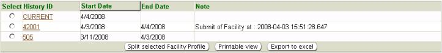

Previous Topic
Next Topic
| Facilities
|
Previous Topic |
Next Topic |
The system’s Facility Profile History page, available from the third-level menu of the Facilities tab, allows you to view a facility’s current profile and historical profile information, if applicable. When significant changes to the profile (whether alone or as part of another action (e.g., application)) are submitted through IMPACT by an external person or submitted internally by DO/LAA staff, the Facility Profile that is current at that time is saved as a historical profile. This function is provided for situations where reports, applications, or other functions are reviewed in the future or, in the case of emissions inventories, submitted for a previous reporting year. The ability to view a facility’s historical profile can be beneficial when reviewing historical permits, emissions inventories, etc. This page also allows you to manually create a historical Facility Detail by splitting the Facility Profile.
The following datagrid of information will appear when you access the third-level menu, Facility Profile History:

A list of historical profiles, if applicable, is available in the datagrid as well as a current profile.
To view the information for a specific historical profile date range, click on the desired History ID number in the datagrid. The historical profile page will open with the historical profile information for the dates you have selected. There will be a bold red heading that reads, “** Historical version. Please note the facility inventory version start and end dates **”
NOTE: From this point forward, anything you click on in the facility tree and some of the third-level menus will be the historical version of the information. If you wish to view current profile information, you must click on the Facility Profile History on the third-level menu then click Current in the list or return to the Facility Search page and search for the facility again. Third-level menu items that display historical information include: Emissions Units, Control Equipment, Release Points, Federal Rules, Allowable Emissions and Location. All other third-level menu items will ALWAYS display the current facility inventory information even if you are viewing a historical version.
A historical profile data report may be viewed and printed for the entire facility if you click the Show Profile Report button at the bottom of the historical Facility Detail page. A pop-up will appear and you should click on the Facility Detail Data Report link to download the document or Cancel to close the pop-up without viewing the document. This profile report includes the historical facility information, for the dates previously selected; such as facility notes, PER due dates, emissions reporting category, SIC codes, contacts, emissions unit information, allowable emissions, etc.
Historical emission unit information may be viewed from this
page by
clicking the emissions unit icon,  , in the Facility Tree. This page
will also include the bold red historical view heading as previously
described. The information provided is historical data for the
previously selected dates.
, in the Facility Tree. This page
will also include the bold red historical view heading as previously
described. The information provided is historical data for the
previously selected dates.
For more information on features on these pages view the specific Help pages for Facility Tree and Facility Profile.
You have the ability to create a version (historical) of a Facility
Profile without making changes to the Facility Detail, or submitting
documents, which typically initiate the generation of a historic
profile. In order to create a new historical profile, you must split a Facility Detail. To split a profile, first click on the radio button
to the left of the History ID that you wish to split. You may split a
current or a historical profile. Second, click on the Split selected
Facility Detail button at the bottom of the datagrid. A pop-up will
appear where you will enter a Revised End Date, by either entering it
into the input field or clicking on the calendar icon  , to the right of
the field, and selecting a date which will be applied to the profile.
, to the right of
the field, and selecting a date which will be applied to the profile.
Once on the facility’s historical profile page, you may select an item in the third-level menu, e.g., owner/contacts, applications, emissions reports, etc., to view the current and historical information relating to each menu item. As discussed above, third-level menu items that display historical information include: Emissions Units, Control Equipment, Release Points, Federal Rules, Allowable Emissions and Location. All other third-level menu items will ALWAYS display the current facility inventory information even if you are viewing a historical version. If you wish to view all current profile information, you must click on the Facility Inventory History on the third-level menu then click Current in the list or return to the Facility Search page and search for the facility again.
Information from the Facility Inventory History list may be viewed,
exported to Excel or printed. By clicking  you may view and print. By
clicking
you may view and print. By
clicking  a pop-up will appear in which you must click Open in order to
view the information in Excel.
a pop-up will appear in which you must click Open in order to
view the information in Excel.
Copyright © 1996, 2004, Oracle. All rights reserved.